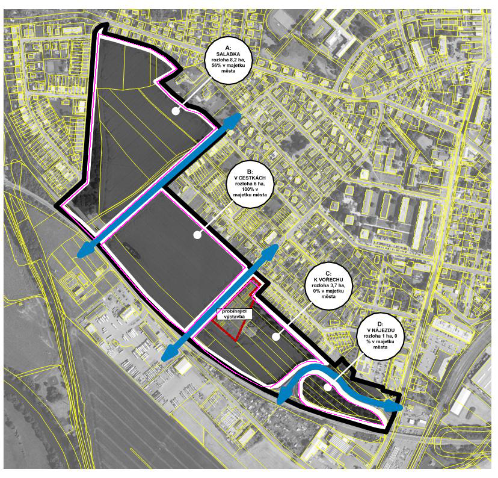

URBIQ / MNICHOVO HRADIŠTĚ / 13. 11. 2026
První mapový balíček převádí tři listy z dokumentové pracovny. Obsahuje 4 vrstvy a 23 prvků. Ostatní mapy a studie nejsou tímto během dokončeny; evidence pokrytí uvádí všech 93 zdrojů a nezpracované stránky.
Výpočty proběhly v metrickém systému EPSG:5514. GeoJSON používá WGS84 v pořadí zeměpisná délka, šířka dle RFC 7946. Zdrojové rastry jsou přepočteny do EPSG:3857 pro zobrazení v Leafletu; nejde o prosté přitažení obrázku mezi dva rohy.
Absolutní polohová přesnost nebyla určena. Černá čára hranice S004 má v terénním měřítku přibližně 10 m na šířku. U A–D navíc působí šířka bílých čar, ruční interpretace a schematické zjednodušení. Vektory slouží k orientaci a práci se zdroji, ne k vytyčování, výpočtu ceny parcel nebo určení vlastnictví.
| Vrstva | Prvky | Soubor |
|---|---|---|
| Řešené území · P02 | 1 | GeoJSON ↓ |
| Části A–D · zadání | 4 | GeoJSON ↓ |
| Vodovod · souřadnicové body | 17 | GeoJSON ↓ |
| Vodovod · spojnice bodů | 1 | GeoJSON ↓ |
Manifest včetně hashů, transformací a mezer · Katalog vrstev a rastrů · Validace geometrie · Ověření prohlížečky
Ke každému prvku se zachovává zdroj, strana, metoda, revize a stav doložení. Polygonové kružnice jsou uzavřené a orientované dle RFC 7946. Plochy odvozené z digitalizace se ukládají jen jako kontrola, odděleně od textových výměr zadání.
Vnitřní obrysy částí po digitalizaci dávají přibližně 7,65 / 5,27 / 3,25 / 0,91 ha. Popisky zadání uvádějí 8,2 / 6 / 3,7 / 1 ha. Rozdíl nebyl uměle vyrovnán: zdrojová výměra může mít jiný rozsah než bílý obrys schématu. Pro ekonomickou rozvahu je nutné stanovit závazné členění a výměry.

Studie US7, rezidenční studie a jejich revize se neslučují do jednoho současného návrhu. Zkušební automatické umístění S045 vůči katastrálnímu podkladu poskytlo po prostorovém omezení jen 5 vhodných shod; na obhajitelnou fitovací a kontrolní sadu to nestačilo. Geografický export tohoto listu proto nevznikl. DWG ani šikmé fotografie nebyly vydávány za umístěné mapové vrstvy.
Podíly města 56 / 100 / 0 / 0 % jsou údaje popisků zadání. Současné vlastnictví, právní účinky studií, provoz a kapacita sítě zůstávají neověřené. K přípravě konkrétních dohod je nutné jejich ověření.
Leaflet 1.9.4 je uložen lokálně. Živá mapa používá veřejné dlaždice ČÚZK. Místní referenční ortofoto stažené 12. 11. 2026 je pod živými dlaždicemi jako záloha; jeho datum snímkování nebylo samostatně ověřeno. Vypnutí živého podkladu zastaví nové požadavky na dlaždice. Dokumenty se na mapovou službu neposílají.
Skripty build_map_package.py, register_study_maps.py a evidované ruční vstupy jsou součástí důkazů. Opakování v pracovním projektu: python -X utf8 build_map_package.py --out <nový adresář>; závislosti jsou evidované v manifestu, knihovny jsou v tmp/map_dependencies. Dřívější výstupy se nepřepisují.
Opakovatelný pokyn: „Přidej do mapy další konkrétní list a revizi. Uchovej zdroj i legendu, zdokumentuj umístění a kontrolní body, odděl explicitní údaje od interpretace a ověř GeoJSON nad původním rastrem. Neověřenou geometrii ponech jako lokální kandidát.“
Technické kontroly nejsou lidské schválení ani potvrzení aktuálnosti zdrojových údajů.